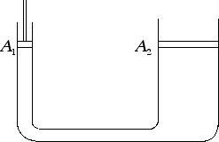

Equilibrio nei fluidi
Principio di Pascal
Applicheremo ora il concetto di pressione ai fluidi ideali e in particolare ai liquidi. I fluidi (liquidi e gas) in fisica sono caratterizzati dal non avere forma propria. I fluidi assumono infatti la forma del recipiente che li contiene. I solidi invece hanno forma propria perché le molecole in un solido non possono scorrere l'una rispetto all'altra. All'interno dei fluidi c'è poi una distinzione importante tra i liquidi e i gas. Infatti i liquidi, a differenza dei gas, hanno volume proprio dal momento che non è possibile comprimere un liquido e ridurre il suo volume. Prima di procedere, vogliamo chiarire come ogni sostanza in natura si può presentare in ognuno dei tre stati di aggregazione: solido, liquido e gassoso, a seconda delle condizioni di temperatura e pressione alle quali è sottoposta.
In questa sezione ci limiteremo a considerare le proprietà dei liquidi. I liquidi esercitano una forza su ogni punto delle superfici con cui sono a contatto. Tale forza è perpendicolare alla superficie e ha un verso che va dal liquido verso la superficie: possiamo perciò concludere che i liquidi esercitano una pressione sulle superfici con le quali sono a contatto.
Per capire quali sono le caratteristiche della pressione esercitata da un liquido, pensiamo per prima cosa al dentifricio contenuto in un tubetto. È facile rendersi conto che, per far uscire il dentifricio, possiamo applicare una pressione con la nostra mano in un punto qualunque del tubetto. La pressione che esercitiamo in tale punto si propaga infatti inalterata fino all'apertura del tubetto. I liquidi obbediscono infatti a un principio importante che va sotto il nome di principio di Pascal: se applichiamo una pressione in un certo punto del liquido, questa si propaga inalterata ad ogni altro punto del liquido.
Al nome di Pascal è associato non solo il principio ma anche una sua curiosa applicazione, la botte di Pascal: supponiamo di avere una botte piena d'acqua e inseriamo al suo interno una siringa di sezione pari a 0.5 cm2, riempita a sua volta d'acqua. Con le nostre mani possiamo esercitare sulla siringa senza eccessiva fatica una forza-peso pari a 20 kgp, ossia circa 200 N. Il principio di Pascal ci dice che la pressione
p = 200 N / 0.5 cm2 = 200 N / (0.5 · 10-4 m2) = 4 · 106 Pa ≈ 40 atm
esercitata dalle nostre mani sulla siringa si propaga inalterata ad ogni altro punto della botte. 40 atm sono una pressione estremamente elevata: le pareti della botte non sono in grado di reggere una tale pressione e la botte esplode.
Un'applicazione meno rovinosa del principio di Pascal è invece data dal sollevatore idraulico, grazie al quale si riescono a sollevare corpi molto pesanti, come delle auto, applicando forze di (relativamente) piccola intensità. Nella figura sottostante tra il pistone 1 e il pistone 2 si trova un liquido:

Applicando una forza F1 alla superficie di area A1 esercitiamo una pressione p1 = F1 / A1 sul liquido. Tale pressione per il principio di Pascal si propaga inalterata ad ogni altro punto del liquido e quindi la pressione in prossimità della superficie 2 sarà p2 = p1. Pertanto vale la seguente uguaglianza F1 / A1 = F2 / A2. Moltiplicando la precedente relazione per A1 possiamo trovare qual è la forza che dobbiamo applicare al pistone 1 per sollevare un corpo di forza-peso F2 posto sul pistone 2. Infatti abbiamo che F1 = F2 · A1 / A2. Tanto più piccola è l'area della superficie 1 rispetto all'area della superficie 2, tanto minore sarà la forza necessaria per sollevare il corpo posto sul pistone 2. Su simili principi fisici si basa il funzionamento dei freni a disco delle auto o delle moto.